练习⑤ 発展課題与故障对应
.png 放进 assets/gui/ 后执行 python3 tools/swap_gui_images.py <site> --apply 即可一键替换。発展 1：進捗と結果分析（WIP と収益を正しく出す）
ETO の損益は「進捗 → 結果分析 → WIP／収益 → 決済」で作られます。ここをやらないと、出荷した分しか売上が出ず、仕掛中の案件が損益に反映されません。
| 流れ | 事务码 | 做什么 / 看什么 |
|---|---|---|
| 1 進捗の決定 | CNE1（個別）/ CNE2（一括） | 進捗分析（進捗バージョン、進捗テクニック：数量比例/原価比例など）で WBS/ネットワークの進捗を決める |
| 2 活動の確認（材料） | CN25/CN27 | 活動の実績時間を計上（進捗・原価の材料） |
| 3 結果分析の実行 | KKA2（個別）/ KKAJ（一括） | 収益認識キー/結果分析キーに従って WIP と 認識収益 を計算 |
| 4 WIP の照会 | KKAX | WIP（仕掛品）の金額を照会 |
| 5 カットオフ期間の管理 | KKA0P など | 結果分析の対象期間を設定（月次で運用） |
練習シナリオ（例：WBS .2 の実績原価 3,000,000 / 計画原価 3,200,000 / 進捗 60%） ・進捗 60% → 結果分析が 原価比例（POC）なら 認識収益 ≈ 5,000,000 × 60% = 3,000,000 ・実績原価 3,000,000 と 認識収益 3,000,000 が対応 → WIP = 0（損益が出る） ・進捗 40% なら 認識収益 2,000,000 → 実績原価 3,000,000 との差 1,000,000 が WIP（在庫/仕掛として繰延）
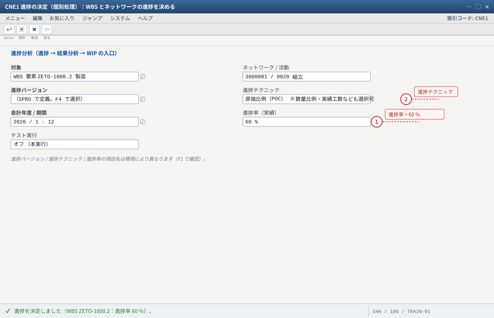
- 1 進捗は「材料」。ここで入れた値と実績原価の関係で WIP が決まる。結果分析（KKA2）を実行するまで損益は動かない
- 2 進捗テクニック（原価比例＝POC / 数量比例 / 実績工数）で収益認識の計算式が決まる
自システムでの確認：一括は CNE2、活動の実績は CN25 / CN27、予測日付は CJ23。進捗の材料が無いと結果分析（KKA2）で収益が立ちません。
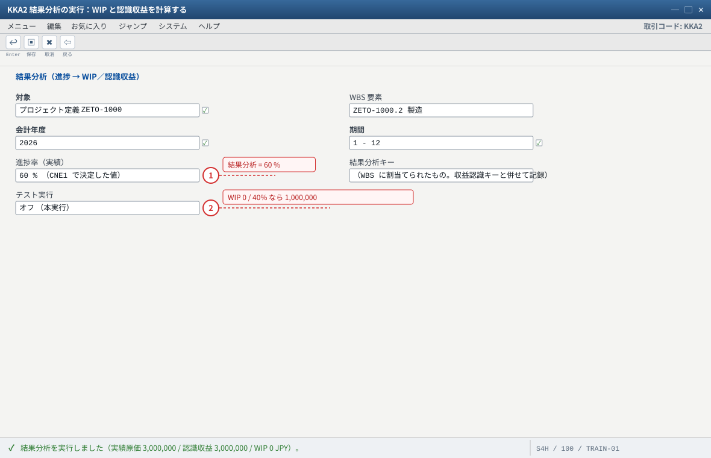
- 1 進捗 60 % なら認識収益 = 受注 5,000,000 × 60 % = 3,000,000。実績原価 3,000,000 と一致するので WIP は 0（損益が出る）
- 2 WIP の金額は KKAX（WIP 照会）で確認する。進捗 40 % なら認識収益 2,000,000 → 差 1,000,000 が WIP として繰延
自システムでの確認：一括は KKAJ、対象期間（カットオフ）は KKA0P 系。結果分析キー / 収益認識キーは環境依存なので、WBS の設定を先に記録してください。
発展 2：決済（原価を WBS へ確定させる）
| 対象 | 事务码 | 説明 |
|---|---|---|
| 製造指図 | KO88（個別）/ CO88（一括） | 指図に集まった原価を決済ルールに従って受注/WBS へ |
| 得意先受注 | VA88 | 受注をコスト対象にしている場合の決済 |
| WBS 要素 | CJ88（個別）/ CJ8G（一括） | WBS に集まった原価・収益を決済受信者（会社コードの損益勘定など）へ |
| 決済ルール | CJB2（個別）/ CJB1（一括） | 決済受信者の定義。無いと決済できない |
| 決済明細の照会 | CJIC/CJID | 決済で何がどこへ流れたかを確認 |
- 练习④ の直後に
CJI3を確認し、指図の原価がまだ WBS へ確定していない状態を記録する。 KO88（指図）→ 期間・決済タイプを指定して実行 → ログを確認。CJ88（WBS.2）→ 実行 → ログとCJIC（決済明細）を確認。- 再度
CJI3を見て、WBS の原価・収益がどう変わったかを説明する（ここが ETO の「月末の意味」）。
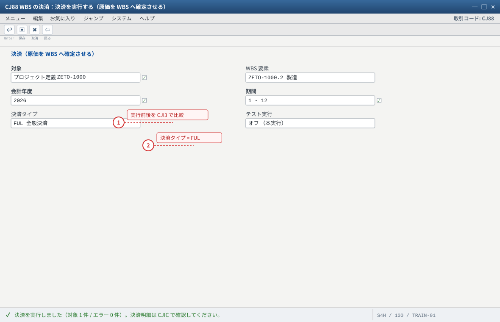
- 1 実行の前に CJI3 で「指図の原価がまだ WBS へ確定していない」状態を記録しておく。実行後の CJI3 と見比べるのがこの発展の目的
- 2 決済ルール（CJB2）が無いと決済できない。指図は KO88 / 受注は VA88 / WBS の一括は CJ8G
自システムでの確認：テスト実行で先にログを見る癖をつけてください。決済後に CJI3 の「決済」列がマイナス表示になることがあります（正常）。
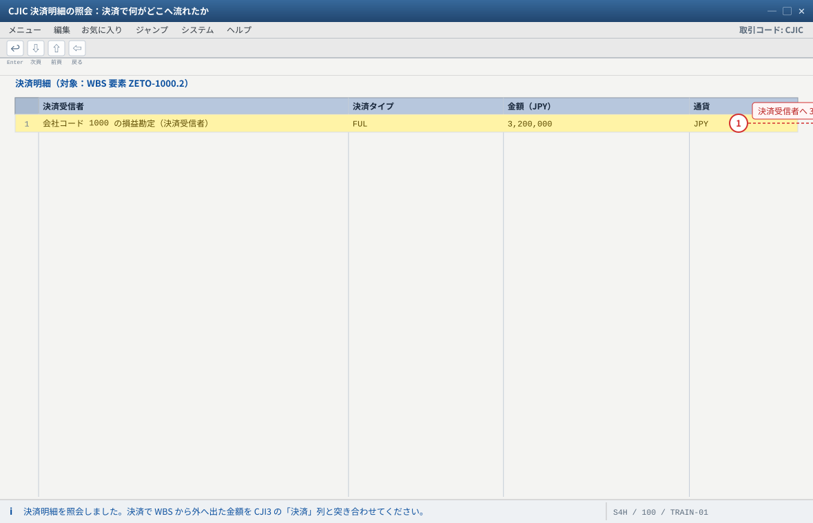
- 1 決済で WBS の原価・収益が決済受信者へ出る。CJI3 の同じ金額と一致すれば链路は通っている
自システムでの確認：金額と決済タイプは決済対象（WBS に集まった原価・収益）と決済ルール（CJB2）次第で変わります。一括の決済明細は CJID です。
発展 3：予算と可用性管理（超支会怎样）
- 現在の予算使用額を
CJ31（元予算）とCJI5（コミットメント）で確認する。 CJBVで可用性管理を活性化（未実行なら）→ 予算プロファイルの許容範囲（警告/エラー）を確認する。- 予算を超える発注（
ME21N）や指図（CO02の数量増）を試し、警告かエラーか、メッセージ番号を記録する。 - 対処を体験：
CJ34（予算振替）/CJ37（予算補足）/CJ36（プロジェクトへの補足）で予算を増やす。
予算が「Budgeted」状態でロックされている場合は、ステータス系の機能（OPSXなど）で解除が必要になることがあります。
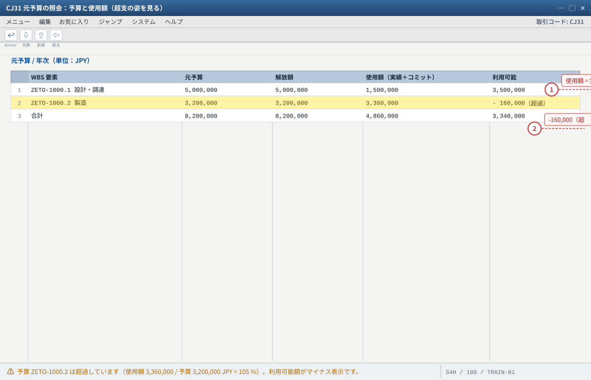
- 1 使用額は「実績＋コミットメント」。発注（ME21N）しただけでも予算を食う＝超過の主因になりやすい
- 2 超過したまま進めると可用性管理（CJBV）の警告/エラーで購買・指図が止まる。増額は CJ37（補足）/ CJ34（振替）
自システムでの確認：予算の投入・変更は CJ30、解放は CJ32、増額は CJ37（補足）/ CJ34（振替）。列見出しは画面の並びに合わせています（名称は環境により異なる場合があります）。
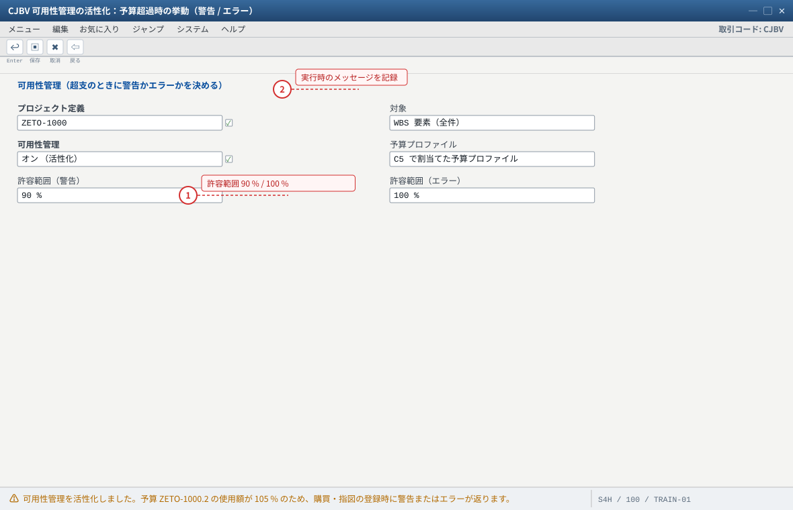
- 1 100 % でエラーにするか警告で止めるかは業務要件。業務と合意してから設定する（ここが「超支会怎样」の答え）
- 2 超過させたまま進めたいなら CJ37（補足）/ CJ34（振替）で予算を増やす。実行時のメッセージ番号を必ず記録する
自システムでの確認：ME21N（発注）または CO02（数量増）で予算を超えさせ、警告かエラーか・メッセージ番号・対処（CJ34 / CJ37）を記録してください。挙動は予算プロファイル次第です。
発展 4：出来高請求（マイルストーン請求）
- ネットワーク活動（または WBS）にマイルストーンを登録する（
CN21/CN22のマイルストーン、日付と「請求の解除」を設定）。 - 受注明細の請求計画を日付ベースから出来高ベース（または両方）に整える（請求計画タイプに注意）。
- マイルストーン達成（
CN25など）→ 受注の請求計画の該当行が「請求可能」になる。 VF01で請求できることを確認し、CJI3に収益が立つことを確認する。
DP90/DP91）で実績原価ベースに請求する——いずれも「請求計画 × 明細カテゴリの請求関連」の組み合わせで実現します。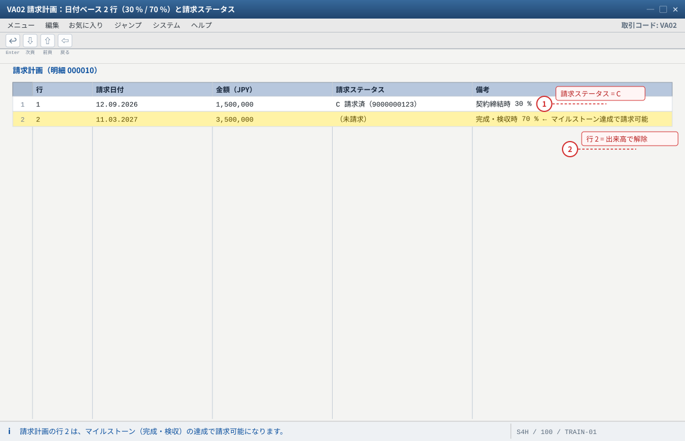
- 1 請求ステータス C は請求済みの印（請求後に自動で付き、同じ行の二重請求を防ぐ）
- 2 請求計画に無い日付では請求できない（KBA 2763512）。出来高ベースならマイルストーンとの紐付けが前提
自システムでの確認：請求計画タイプ（日付ベース / 出来高ベース）と明細カテゴリの請求関連は VA03 と VOV7 で確認。マイルストーンは CN22（変更）/ CN23（照会）で登録・確認します。
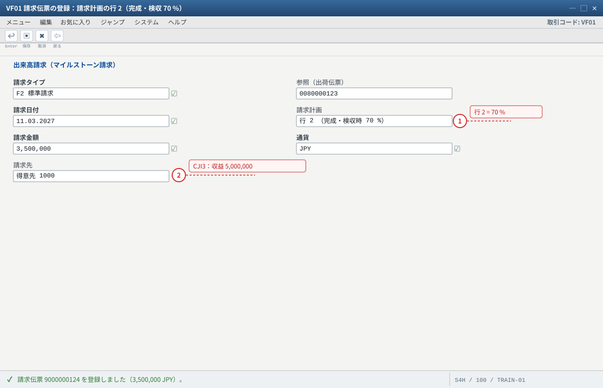
- 1 マイルストーン達成で行 2 が「請求可能」になった（CN22 でマイルストーンと「請求の解除」を設定）
- 2 請求後は行 2 の請求ステータスが C になり、CJI3 の WBS .1 に収益が累計 5,000,000 立つ
自システムでの確認：出来高ベースの請求計画は請求計画タイプとマイルストーンの紐付け、明細カテゴリの請求関連（VOV7）が前提です。取消は VF11。
発展 5：ネットワーク中心の運用（工数と進捗）
活動の確認 : CN25（個別）/ CN27（一括）/ 表示 CN28 / 取消 CN29 タイムシート : CAT2（入力）/ CAT3（照会）→ 活動や WBS に工数を計上 進捗の決定 : CNE1（個別）/ CNE2（一括） 日程の更新 : CJ23（変更）/ CJ24（照会）— 予測日付（forecast dates） 能力評価 : CM01（作業区視点）/ CMP2（要員計画）
CN25で活動 0020 の実作業時間を計上 →CJI3で労務費として集まることを確認。CNE1で進捗を決定 →KKA2で結果分析 →KKAXで WIP を確認（発展 1 と組み合わせ）。CJ23で予測日付を更新し、CJ20Nの日程（ガント）で反映を確認。
CO11N）とネットワーク活動（CN25）で同じ作業の工数を両方に計上しないこと。どちらで拾うかを案件ルールで決めます。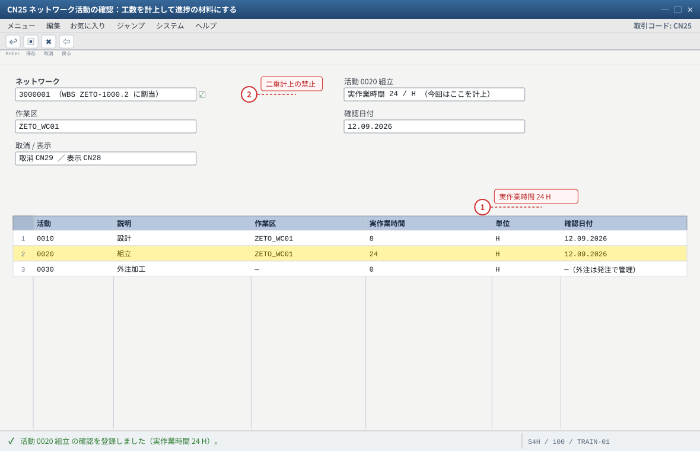
- 1 計上した工数は CJI3 で WBS の労務費として見える（ネットワークは WBS .2 にぶら下がる）
- 2 製造指図（CO11N）と同じ作業を両方に計上しない。どちらで工数を拾うか案件ルールで決める
自システムでの確認：一括確認は CN27、照会は CN28、取消は CN29。タイムシートは CAT2（入力）/ CAT3（照会）。進捗は CNE1 → KKA2 → KKAX、日程は CJ23（変更）/ CJ24（照会）で予測日付を更新し CJ20N のガントで確認します。
発展 6：部品・外注を WBS で直接手配
- 製造指図を経由せず、
ME51Nで勘定設定 = WBSZETO-1000.2の購買依頼を作る（材料直買い・外注加工のケース）。 ME21Nで発注 →CJI5（コミットメント）に予定額が出ることを確認。MIGO（101）で入庫（在庫にせず費用処理する設定なら費用計上）、または外注の場合は支給/入庫の流れを確認。MIROで請求書照合。- 確認：
CJI3に費用（該当費目）が出て、WBS に集まっていること。
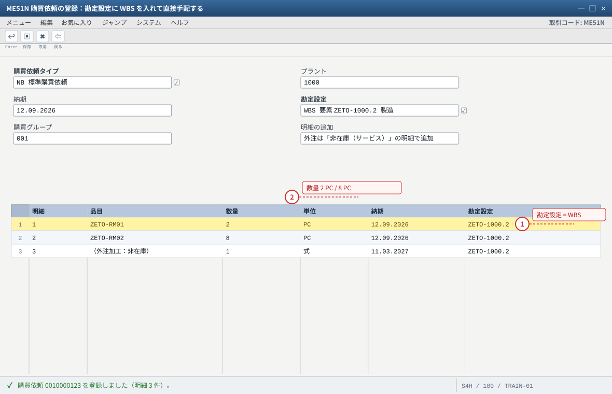
- 1 勘定設定に WBS を入れる＝費用が WBS に集まる。空のままだと費用はどの案件にも集まらない（CJI3 に出ない）
- 2 発注（ME21N）すると CJI5 にコミットメント（予定額）が立ち、予算を先に食う＝発展 3 の可用性管理の練習材料
自システムでの確認：発注は ME21N → 入庫は MIGO（101）/ 外注は支給と入庫 → 請求書照合は MIRO。コミットメントは CJI5、WBS の費用は CJI3、予算の使用額は CJ31 で確認します。外注の品目と移動タイプは F1 で確認してください。
7. 故障対照表（18 項：症状から引く）
| # | 症状 | 第一嫌疑 | 確認手顺 |
|---|---|---|---|
| 1 | 受注明細に WBS を入力できない | 明細カテゴリが WBS 割当を許していない | VOV7 の明細カテゴリ → VOV4 の決定 → 必要なら ZETO 明細カテゴリを作成（Cloud は CBAO 系の交付済みのみ） |
| 2 | WBS を入れても所要量タイプが MTO 用（KE 等） | 品目マスタ MRP3 の戦略グループ | MM03 MRP3 → OPPJ/OVZG で Q 系の所要量タイプか確認（Cloud は E2→E21） |
| 3 | MD04 に需要が出ない | 受注明細の WBS／所要量転送／納入日程行カテゴリ | VA03 明細と納期行 → VOV6 の所要量転送 → VOV5 の決定 |
| 4 | 計画手配の勘定設定が空 | 需要が WBS に帰属していない | MD04 の計画手配明細 → VA03 の WBS → SE16N: PLAF |
| 5 | 計画手配の在庫区分が自由在庫（Q でない） | 個別所要量／戦略グループ／評価付フラグ | MM03 MRP4 → OVZG（所要量クラス）→ CJ20N（評価付プロジェクト在庫） |
| 6 | 101 入庫が自由在庫に入る | 指図の WBS 勘定設定が無い／Q が不成立 | CO03 ヘッダの勘定設定 → 上記 #5 の 3 点 |
| 7 | プロジェクト在庫に金額が付かない | 評価付プロジェクト在庫 OFF／評価クラス未設定 | CJ20N のフラグ → MM03 会計ビュー → MMBE の金額欄 |
| 8 | 出荷で引当できない | プロジェクト在庫に入庫されていない／保管場所違い | MMBE（Q の数量と保管場所）→ 练习③ の 101 をやり直し |
| 9 | PGI ができない（特別在庫 Q） | 戦略グループ/在庫区分の不整合（Cloud は 6GD の既知事象） | On-Premise：MM03 MRP3・所要量タイプ・評価付フラグ。Cloud：KBA 3623492（E2・6GD の活性状況） |
| 10 | 請求できない（請求計画） | 請求計画の日付/金額、明細カテゴリの請求関連 | VA03 請求計画 → VOV7 の請求関連。KBA 2763512 |
| 11 | CJI3 に収益が出ない | 受注明細の WBS が請求要素でない | CJ20N の WBS フラグ（請求要素）→ VA03 明細の WBS |
| 12 | CJI3 に原価が出ない | 指図/発注の勘定設定が WBS でない | CO03／ME23N の勘定設定 → SE16N: COEP |
| 13 | 予算超過で発注/指図が止まる | 可用性管理（CJBV）と許容範囲 | CJ31 の使用額 → 予算を振替/補足（CJ34/CJ37）または許容範囲を業務と合意 |
| 14 | 予算が投入できない | 予算プロファイル未割当／年度・期間の不整合／ステータス | プロジェクトプロファイルの予算プロファイル → 年度設定 → ステータス系機能 |
| 15 | 決済できない | 決済ルールが無い／ステータス未解放 | CJB2（決済ルール）→ CJ20N のステータス → CJ88 のログ |
| 16 | 結果分析で WIP/収益が出ない | 結果分析キー/収益認識キーが未設定、カットオフ期間の不整合 | WBS の結果分析キー → KKA2 のログ → KKA0P（カットオフ） |
| 17 | 進捗が更新されない | 進捗バージョン/進捗テクニックの未設定 | CNE1 の設定を確認（進捗分析のカスタマイズ）→ CNE2 で一括実行 |
| 18 | 取消できない（後続伝票が存在） | — | 逆順：請求 VF11 → PGI VL09 → 入庫（MIGO取消/MBST）→ 実績 CO13/CN29 → 指図 CO02（TECO/削除） |
② PS 层：手配の勘定設定が WBS か、在庫区分が Q か → 違うなら MRP4・評価付フラグ・戦略グループ。
③ MM 层：Q 在庫ができて増減するか（
MMBE/MSPR）→ できないなら指図の勘定設定と入庫先。④ CO 层：WBS に原価・収益が集まり、決済・結果分析で損益になるか → ならないなら請求要素・決済ルール・結果分析キー。
8. CJI3 / MD04 読法表
| 画面・行 | 見方 | ETO での意味 |
|---|---|---|
CJI3 の「計画」列 | CJ40/CJ42 で入れた計画原価・計画収益 | 予実比較と POC の分母 |
CJI3 の「実績」列（コスト要素別） | 材料費・労務費・外注費・諸経費 | WBS に集まった原価。費目がバラける・空欄なら勘定設定を疑う |
CJI3 の「収益」 | 請求で立った収益 | 請求要素にだけ立つ |
CJI3 の「決済」列 | 決済で外へ出た金額 | 決済後にマイナス表示になることがある（正常） |
CJI3 の「WIP」 | 結果分析で計算された仕掛 | 進捗と実績の関係で増減（発展 1 の例） |
CJ31 / CJI5 | 予算・解放額・使用額 / コミットメント | 発注残（コミット）も予算を食う点に注意 |
MD04 の「得意先所要量」 | 受注の需要（WBS 付き） | WBS に帰属している証拠 |
MD04 の「計画手配」 | 勘定設定 = WBS、在庫区分 = Q | ETO 成立の証拠 |
MD04 の「プロジェクト在庫」 | Q の現在量 | 101 で増、601 で減 |
MMBE / MSPR | プロジェクト在庫の数量と金額（表は MSPR、SOBKZ = Q） | 「Q は表に書かれている」ことを常に確認 |
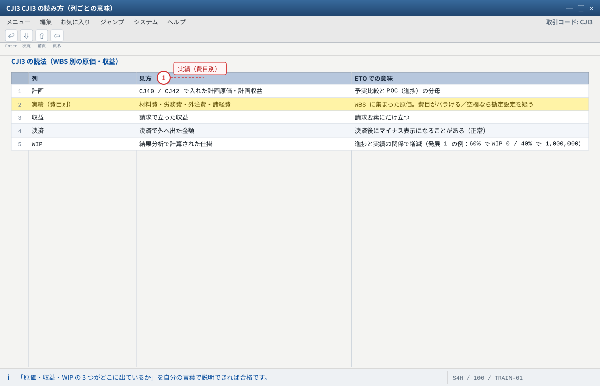
- 1 収益の行が空なら請求要素（.1）のフラグと受注明細の WBS、原価の行が空なら指図/発注の勘定設定を疑う
実績の費目は原価要素の設定に依存します。決済（CJ88 / KO88）の前後で同じ CJI3 を見比べると「月末処理の意味」が見えます。
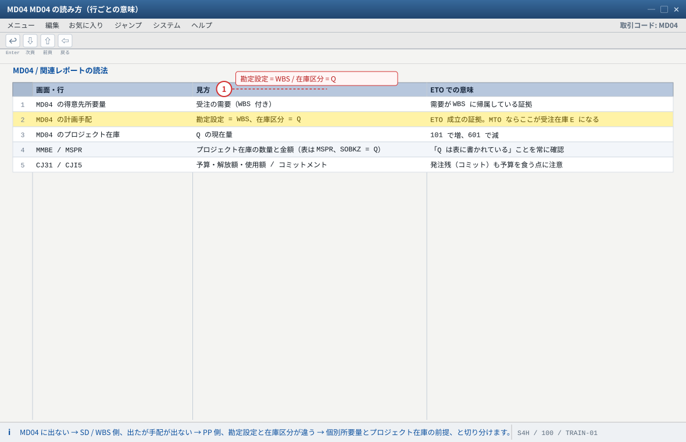
- 1 計画手配の 1 行（勘定設定 = WBS、在庫区分 = Q）が読めれば、ETO の在庫設計は理解できています
列見出しは画面の並びに合わせています（名称は環境により異なる場合があります）。表で確認する癖をつけると、症状から原因を引けるようになります。
验收（完成基准）
- 発展 1〜6 のうち少なくとも 2 つを実機で実施し、結果を記録した。
CNE1（進捗）→KKA2（結果分析）→KKAX（WIP）の流れを 1 回実行し、金額の動きを説明できる。KO88（指図）とCJ88（WBS）を 1 回実行し、決済前後のCJI3の違いを説明できる。- 予算超過時の挙動（警告/エラー）を実機で確認し、メッセージと対処（
CJ34/CJ37）を記録した。 - 出来高請求またはネットワーク運用（
CN25/CAT2）のどちらかを試した。 - 故障対照表 18 項のうち、実際に遭遇したものを「症状／根因／証跡 T-code」の 3 点で説明できる。